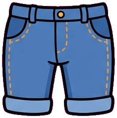
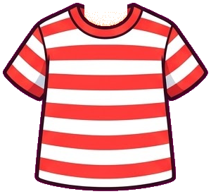
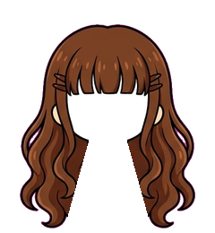

곱셈 방앗간이 열리는 마을
주민을 만들고 마을을 걸어 단원 집에 들어가면 대화로 문제를 풉니다. 텃밭, 꾸미기, 일지, 지도는 별숲의 마을 생활 요소입니다.
마을 산책
지도를 눌러 걷고, 집 앞에서 들어가요.
마을 살림
나만의 주민 만들기



황금 세트 뽑기
별을 모아 한정 세트 조각을 뽑아 보세요. 뽑은 조각은 아바타 옷장에서 입을 수 있습니다.
씨앗 텃밭
차시를 끝내면 씨앗을 받습니다. 심고 물을 주면 별로 자랍니다.
마을 부엌 · 장터 · 강가 · 화단 · 감별실 놀이
거둔 작물의 무게를 재어 장터에 팔거나 요리해 선물하고, 강가 채집과 꽃 배합·모눈 그림 감별 놀이를 즐겨 보세요.
우리 집 꾸미기
주민 부탁
부탁을 해결하면 카드와 씨앗, 별을 받습니다.
수집 도감
모은 카드 0/10